1 Local VCS. Computer A with Version Database File v1 File v2 File v3 going into Working Files folders. Manual backups, simple history database, local work only. 2 Centralized VCS. Central Server and Database with Client 1, 2, and 3 checking out versions and committing changes. Single point of failure, dependent on server connection, uses version deltas (SVN model). 3 Distributed VCS (Git). Full history mirror (database) on GitHub (remote). Peer A, B, and C can push and pull between any remote, GitHub or peer. They commit locally. Robust and fast, full clones of repository history, work offline, sync to remote (git model).
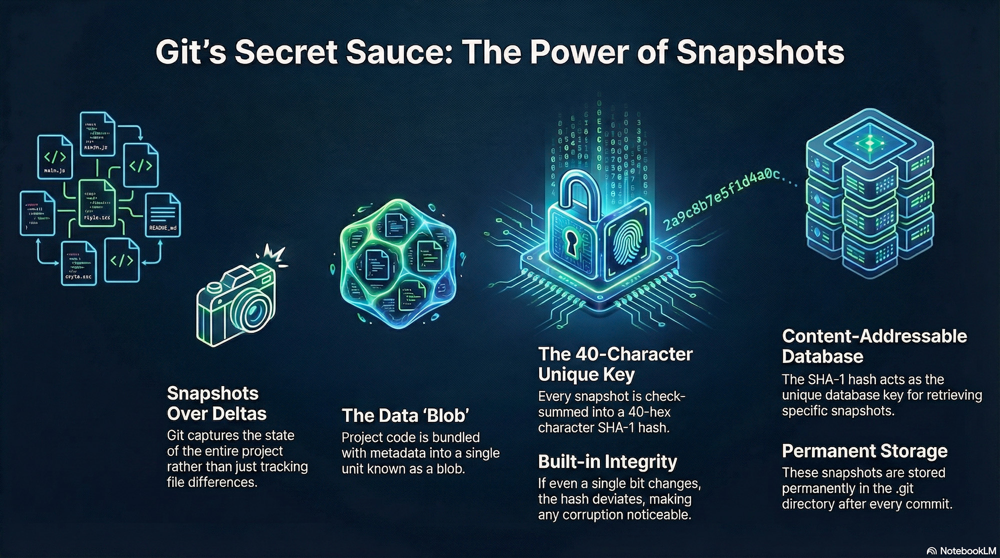
Git's Secret Sauce: The Power of Snapshots. Snapshots Over Deltas. Git captures the state of the entire project rather than just tracking file differences. The Data 'Blob'. Project code is bundled with metadata into a single unit known as a blob. The 40-Character Unique Key. Every snapshot is checksummed into a 40-hex character SHA-1 hash. Built-in Integrity. If even a single bit changes, the hash deviates, making any corruption noticeable. Content-Addressable Database. The SHA-1 hash acts as the unique database key for retrieving specific snapshots. Permanent Storage. These snapshots are stored permanently in the .git directory after every commit.
Initialization (10 mins)
Connect to the course VM via VS Code SSH.
Open the terminal and navigate to your workspace using cd.
Create a new directory mkdir git-lab-1 and enter it.
Initialize a new Git repository git init.
Run ls -a to see the hidden .git directory (this is the repository where Git will store all your snapshots and metadata).
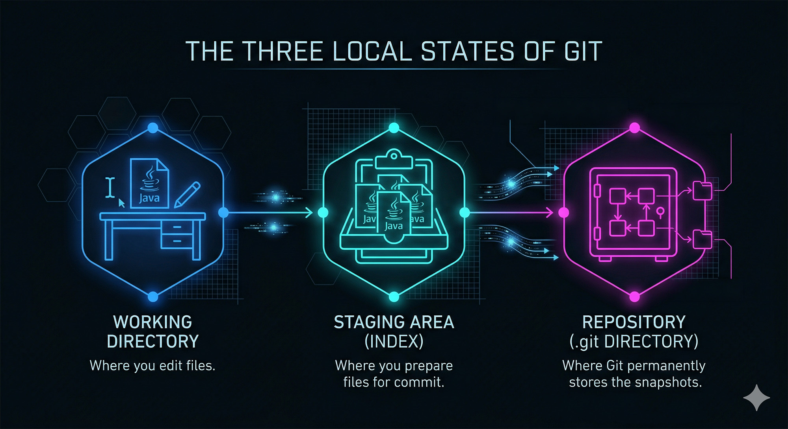
The Three Local States of Git. Working Directory where you edit files. Staging Area (index) where you prepare files for commit. Repository (.git directory) where git permanently stores the snapshots.
The Basic Git Workflow
Edit files in the working directory.
git add [filename(s)]: Puts files in the staging area.
git commit -m "[commit message]": Puts files that are in the staging area into the repository.
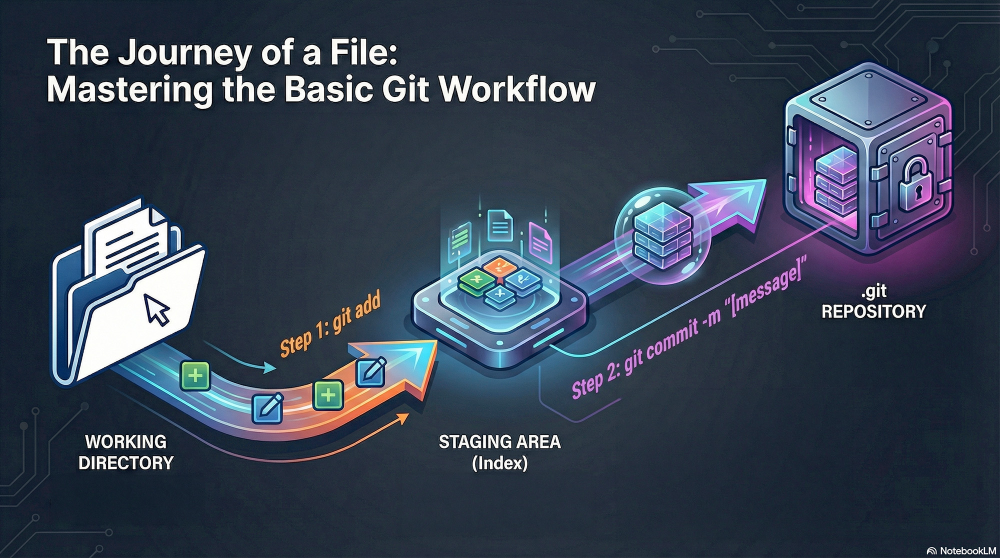
The Journey of a File: Master the Basic Git Workflow. Working Directory. Step 1: git add. Staging Area (Index). Step 2: git commit -m message. .git Repository
The Commit Cycle (15 mins)
Create User.java with a private fields for firstName and lastName and getter and setter methods.
Run git status to see it untracked.
Run git add User.java, then git status to see it staged.
Run git commit -m "Add User class".
Add a toString() method, stage, and commit with a clear message. Use git log to review the history.
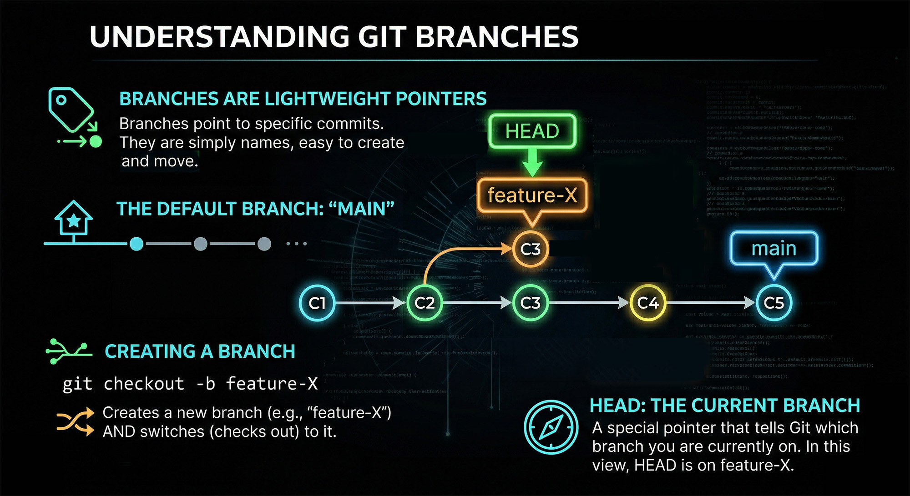
Understanding Git Branches. Branches are lightweight pointers. Branches point to specific commits. They are simply names, easy to create and move. The default branch: main. Creating a branch. git checkout -b feature-X creates a new branch (e.g., feature-X) and switches (checks out) to it. Head: The current branch. A special pointer that tells Git which branch you are currently on. In this view, HEAD is on feature-x.
Branching Context Switch (15 mins)
In the existing repo, create and checkout a new branch: git checkout -b feature-auth.
Add an Auth.java file. Commit it.
Run git checkout master. Observe that Auth.java disappears from the file explorer in VS Code!
Checkout feature-auth again to see it reappear.
Run git branch -a. Observe local and remote branches.
Types of Merges
Fast-forward merge: The "commit path" from the merging branch intersects the tip of the source branch.
Git simply moves the pointer forward.
Two-way merge (Recursive): Changes have occurred on both branches.
Git creates a new commit object with 2 parents.
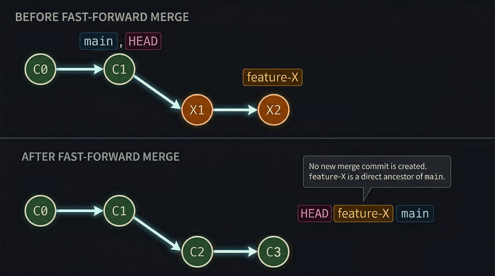
Before Fast-Foward Merge. Commits C0 and C1 are where main, HEAD point. feature-X branches off with commits X1 and X2. After Fast-Forward Merge. Commits C2 and C3 replace X1 and X2 in the before diagram, HEAD, feature-X, and main point to the C3 commit. No new merge commit is created. feature-X is a direct ancenstor of main.
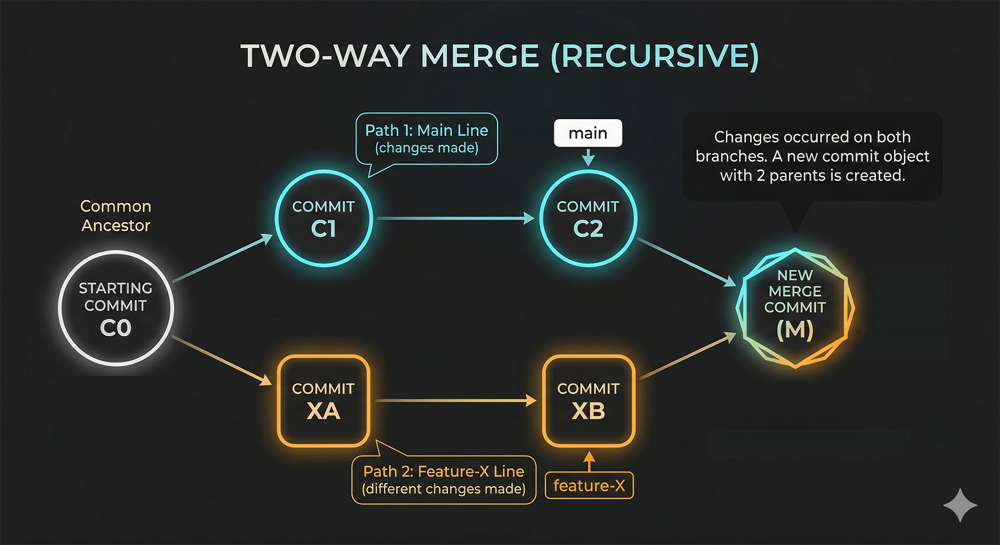
Two-way merge (Recursive). Common ancestor is the starting commit Co. Path 1, the main line branches off with changes in commits C1 and C2. Main points to C2. Path 2, feature-X line branches off the common ancestor with different changes made in commits XA and XB. feature-X points to XB. C2 and XB merge into a new merge commit M. Changes occurred on both branches. A new commit object with 2 parents is created.
Merge Conflicts
Occurs when changes conflict (e.g., same line edited in both branches).
Git pauses the merge. You must manually resolve conflicts in files marked by Git.
Use VS Code's merge conflict editor to Accept Current, Accept Incoming, or Accept Both.
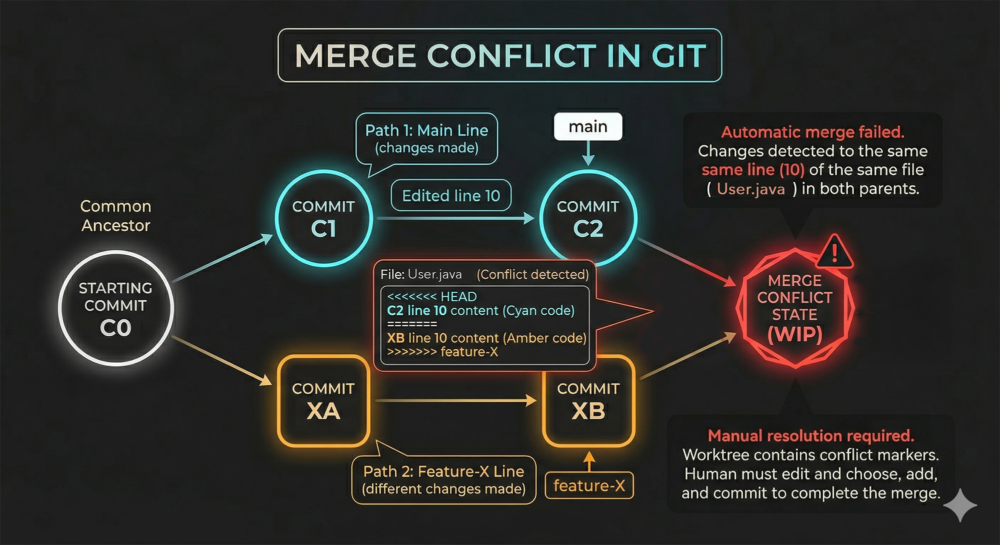
Merge Conflict in Git. Common ancestor is the starting commit Co. Path 1, the main line branches off with changes in commits C1 and C2, where line 10 was edited. Main points to C2. Path 2, feature-X line branches off the common ancestor with different changes made in commits XA and XB, where line 10 was also edited. feature-X points to XB. There is a merge conflict state when attempting to merge feature-X into main. Conflict detected with File User.java. Automatic merge failed. Changes detected to the same line (10) of the same file (User.java) in both parents. Manual resolution required. Worktree contains conflict markers. Human must edit and choose, add and commit to complete the merge.
Engineering a Conflict (15 mins)
On master, edit User.java (e.g., add age field). Commit.
Checkout feature-auth. Edit the exact same line in User.java (e.g., add email field). Commit.
Checkout master and run git merge feature-auth.
Open User.java in VS Code. Use the UI to resolve the conflict (keep both).
Add and commit the resolved file to finalize the merge.
Working with Remotes
git clone [url]: Creates a local repository of an already existing remote repository.
git remote add origin [url]: Connects a local repo to a remote.
git push -u origin [branch]: Pushes your local branch to the remote.
git fetch: Pulls down remote data, but doesn't merge it.
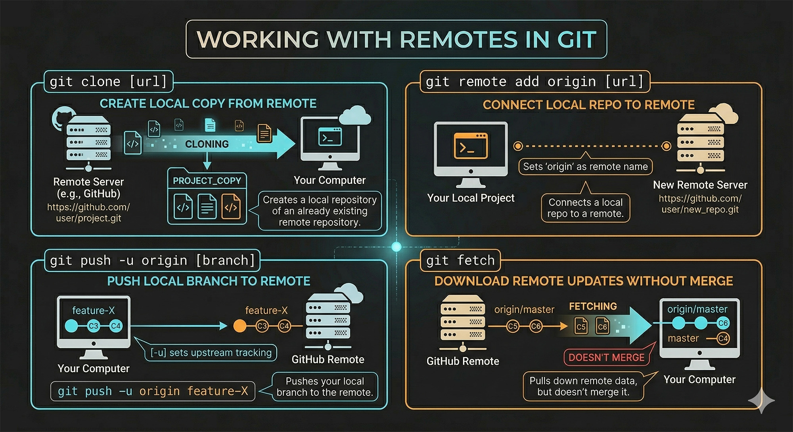
Working with Remotes in Git. git clone [url] creates local copy from remote. Remote Server (e.g., GitHub) cloning project copy to Your Computer. Creates a local repository of an already existing remote repository. git remote add origin [url] connects a local repo to remote. Your local project connects to remote repo, sets origin as remote name. git push -u origin [branch] pushes local branch to remote, like feature-X branch on your computer to GitHub Remote. -u sets upstream tracking. git fetch downloads remote updates without merge. It pulls the data down to your computer but doens't merge it.
The First Push (15 mins)
Create an empty repository on GitHub.
In your terminal, add the remote: git remote add origin [your-url].
Push the code: git push -u origin master.
Verify the code appears on the GitHub website.
The Pull Request Workflow
Clone (one-time only).
Create/checkout local branch for a change request.
Work and commit locally.
Push the branch to GitHub.
On GitHub, generate a Pull Request (PR).
Review, approve, and merge on GitHub.
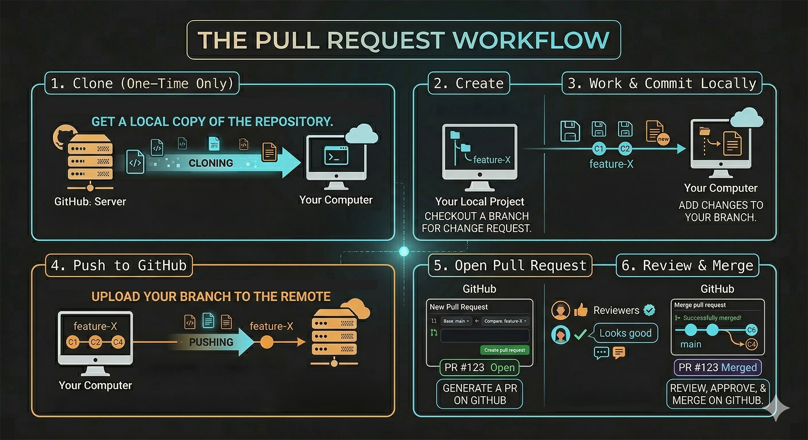
The Pull Request Workflow. 1 Clone (one-time only). Get a local copy of the repository, cloning from the GitHub server to your computer. 2 Create, checkout a branch on your local project for a change request. 3 Work and commit locally by adding changes to your branch. 4 Push to GitHub by uploading your branch to the remote. 5 Open Pull Request on Github. Reviewers comment and approve, then merge the pull request on GitHub.
Collaborative PRs (15 mins)
Work in pairs. Add your partner as a Collaborator on your GitHub repo.
In new directory on course VM, partner clones the repo, creates a branch feature-logger, adds a System.out.println to a method, commits, and pushes the branch to your repo.
Partner opens a Pull Request on GitHub.
You review the PR on GitHub, leave a comment, and click "Merge pull request".
Discard working directory changes: git restore [filename] (removes uncommitted changes).
Unstage a file: git restore --staged [filename].
Modify last commit: git commit --amend (use to fix typos in the last commit message or add missed files).
DO NOT rewrite history on branches that have already been pushed to a remote repository!
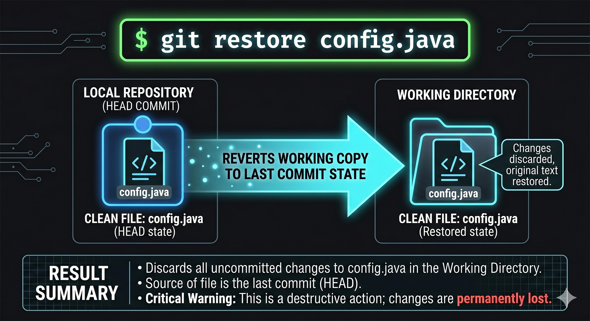
git restore config.java. Local repository (HEAD commit) of clean file config.java (HEAD state) reverts working copy to last commit state. Working directory has config.java in restored state, changes discarded, original text restored. Result summary: Discards all uncommitted changes to config.java in the working directory. Source of file is the last commit (HEAD). Critical warning: This is a destructive action; changes are permanently lost.
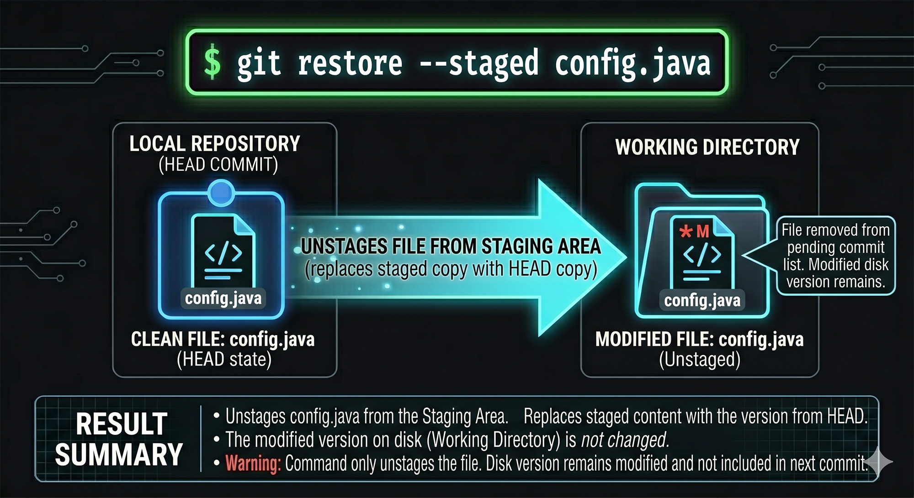
git restore --staged config.java. Local repository (HEAD commit) has clean file config.java (HEAD state). Unstages file from staging area (replaces staged copy with HEAD copy). Working directory now has modified file config.java (unstaged). File removed from pending commit list. Modified disk version remains. Result summary: Unstages config.java from the staging area. Replaces staged content with the version from HEAD. The modified version on disk (working directory) is not changed. Warning: Command only unstages the file. Disk version remains modified and not included in next commit.
Fixing Mistakes (15 mins)
Add a file Secrets.txt containing dummy passwords. Stage it (git add).
Realize the security flaw! Unstage it using git restore --staged Secrets.txt.
Create a .gitignore file and add Secrets.txt to it.
Run git status to verify Secrets.txt is no longer tracked. Commit the .gitignore file.